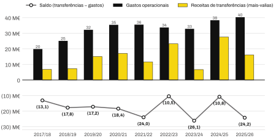
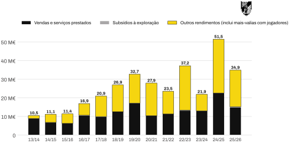
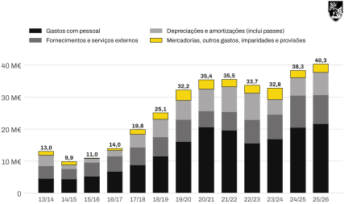
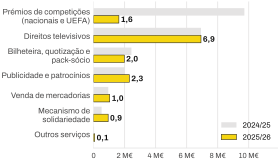
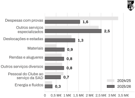

Análise financeira · 2013/14 a 2025/26
Quanto custa a operação da SAD, quanto rendem as vendas de jogadores e o que fica por cobrir.
Síntese
01
As vendas de jogadores são a segunda fonte de rendimento da SAD, mas nunca cobriram os gastos operacionais. Em 2025/26 cobriram 40%: ficaram por cobrir 24,2 M€, mais do que todas as receitas da operação (14,9 M€).

| Época | Gastos operacionais | Vendas brutas | Receitas de transferências | Saldo | Cobertura | Saldo com receitas da operação |
|---|---|---|---|---|---|---|
| 2017/18 | (19,8) | 10,7 | 6,7 | (13,1) | 34% | (3,3) |
| 2018/19 | (25,1) | 21,7 | 7,3 | (17,8) | 29% | (5,2) |
| 2019/20 | (32,2) | 21,3 | 15,0 | (17,2) | 47% | (0,2) |
| 2020/21 | (35,4) | 17,0 | 17,0 | (18,4) | 48% | (8,0) |
| 2021/22 | (35,5) | 15,2 | 11,5 | (24,0) | 32% | (12,7) |
| 2022/23 | (33,7) | 30,9 | 23,2 | (10,5) | 69% | 2,7 |
| 2023/24 | (32,8) | 14,6 | 6,7 | (26,1) | 20% | (13,2) |
| 2024/25 | (38,3) | 49,5 | 27,5 | (10,8) | 72% | 11,8 |
| 2025/26 | (40,3) | 30,8 | 16,1 | (24,2) | 40% | (9,3) |
Valores em M€; negativos entre parênteses. Gastos operacionais = mercadorias + FSE + pessoal + depreciações e amortizações (inclui passes) + outros gastos + imparidades + provisões. Receitas de transferências = mais-valias líquidas com a venda de passes. Cobertura = receitas de transferências ÷ gastos. Saldo com receitas da operação = saldo + vendas e serviços prestados. Consulta SQL 56. Em 2020/21, a fonte só indica as mais-valias, usadas também como vendas brutas.
02
Os rendimentos operacionais passaram de 10,5 M€ em 2013/14 para 34,9 M€ em 2025/26, com um máximo de 51,5 M€ em 2024/25. O crescimento veio sobretudo dos outros rendimentos, onde se registam as mais-valias com jogadores; as vendas e serviços dependem da Europa.

| Época | Vendas e serviços | Subsídios | Outros rendimentos | Total | Peso de outros rendimentos |
|---|---|---|---|---|---|
| 2013/14 | 8,9 | 0,05 | 1,5 | 10,5 | 14% |
| 2014/15 | 6,8 | 0,05 | 4,3 | 11,1 | 39% |
| 2015/16 | 6,2 | 0,05 | 5,1 | 11,4 | 45% |
| 2016/17 | 10,5 | 0,14 | 6,2 | 16,9 | 37% |
| 2017/18 | 9,8 | 0,15 | 11,0 | 20,9 | 52% |
| 2018/19 | 12,6 | 0,01 | 14,4 | 26,9 | 53% |
| 2019/20 | 17,0 | 0,16 | 15,5 | 32,7 | 47% |
| 2020/21 | 10,3 | 0,06 | 17,5 | 27,9 | 63% |
| 2021/22 | 11,3 | 0,06 | 12,1 | 23,5 | 52% |
| 2022/23 | 13,2 | 0,28 | 23,8 | 37,2 | 64% |
| 2023/24 | 12,9 | 0,11 | 8,9 | 21,9 | 40% |
| 2024/25 | 22,6 | 0,05 | 28,8 | 51,5 | 56% |
| 2025/26 | 14,9 | 0,36 | 19,6 | 34,9 | 56% |
Valores em M€. Vendas e serviços prestados = direitos de TV, prémios de competições, bilheteira, quotas, patrocínios, mercadorias e mecanismo de solidariedade. Outros rendimentos = sobretudo mais-valias com a alienação de passes, compensações por atletas vendidos em anos anteriores e receitas de apostas. Consulta SQL 57.
03
Os gastos operacionais triplicaram desde 2013/14 (13,0 → 40,3 M€). Os gastos com pessoal multiplicaram-se por 4,7 e pesam hoje mais de metade do total. Ao contrário das receitas, os gastos quase nunca descem: só caíram em 3 das 12 épocas.

| Época | Pessoal | FSE | Depreciações | Mercadorias | Outros gastos | Imparid. e provisões | Total | Pessoal % | Var. |
|---|---|---|---|---|---|---|---|---|---|
| 2013/14 | 4,6 | 3,9 | 3,4 | 0,15 | 1,0 | 0,01 | 13,0 | 36% | — |
| 2014/15 | 4,4 | 3,2 | 1,2 | 0,27 | 0,3 | 0,49 | 9,9 | 45% | -24% |
| 2015/16 | 5,3 | 4,3 | 1,2 | 0,36 | 0,2 | (0,45) | 11,0 | 48% | 11% |
| 2016/17 | 6,8 | 4,8 | 1,7 | 0,36 | 0,3 | 0,00 | 14,0 | 48% | 28% |
| 2017/18 | 8,8 | 5,5 | 4,0 | 0,48 | 1,0 | 0,00 | 19,8 | 45% | 42% |
| 2018/19 | 11,6 | 6,0 | 5,5 | 0,53 | 1,5 | 0,00 | 25,1 | 46% | 26% |
| 2019/20 | 16,1 | 6,9 | 6,0 | 0,32 | 2,7 | 0,20 | 32,2 | 50% | 28% |
| 2020/21 | 20,7 | 5,0 | 6,8 | 0,50 | 1,9 | 0,48 | 35,4 | 58% | 10% |
| 2021/22 | 19,6 | 5,8 | 7,8 | 0,54 | 0,9 | 0,86 | 35,5 | 55% | 0% |
| 2022/23 | 15,6 | 7,4 | 8,2 | 0,51 | 1,8 | 0,15 | 33,7 | 46% | -5% |
| 2023/24 | 16,9 | 7,6 | 4,7 | 0,48 | 2,9 | 0,22 | 32,8 | 52% | -3% |
| 2024/25 | 20,5 | 10,0 | 5,5 | 0,65 | 1,5 | 0,06 | 38,3 | 54% | 17% |
| 2025/26 | 21,7 | 9,0 | 7,0 | 0,77 | 1,8 | 0,00 | 40,3 | 54% | 5% |
Valores em M€; imparidades e provisões líquidas de reversões (valor negativo = reversão). Depreciações incluem a amortização dos passes de jogadores. Outros gastos incluem as menos-valias com jogadores, multas e quotizações. Consulta SQL 58.
04
As notas 15, 17, 19 e 20 do R&C 2025/26 decompõem as rubricas e comparam-nas com 2024/25. A queda das receitas está quase toda nos prémios de competições (−8,1 M€); nos gastos, a única descida relevante foi nas despesas com provas, também ligadas à Europa (−1,7 M€).


| Rubrica | 2024/25 | 2025/26 | Var. |
|---|---|---|---|
| Direitos televisivos | 6,92 | 6,92 | 0,00 |
| Publicidade e patrocínios | 2,01 | 2,31 | 0,30 |
| Bilheteira, quotização e pack-sócio | 2,44 | 1,98 | (0,46) |
| Prémios de competições (nacionais e UEFA) | 9,72 | 1,63 | (8,09) |
| Venda de mercadorias | 0,95 | 1,04 | 0,09 |
| Mecanismo de solidariedade | 0,52 | 0,94 | 0,42 |
| Outros serviços | 0,03 | 0,07 | 0,04 |
| Rubrica | 2024/25 | 2025/26 | Var. |
|---|---|---|---|
| Outros serviços especializados | 2,40 | 2,52 | 0,12 |
| Despesas com provas | 3,27 | 1,55 | (1,71) |
| Deslocações e estadas | 1,19 | 1,34 | 0,15 |
| Materiais | 0,52 | 0,87 | 0,35 |
| Rendas e alugueres | 0,75 | 0,84 | 0,09 |
| Outros serviços diversos | 0,77 | 0,84 | 0,07 |
| Pessoal do Clube ao serviço da SAD | 0,82 | 0,70 | (0,12) |
| Energia e fluidos | 0,32 | 0,33 | 0,01 |
| Nota | Rubrica | 2024/25 | 2025/26 | Var. |
|---|---|---|---|---|
| 19 | Ganhos com alienação de passes e outros investimentos | 26,39 | 17,21 | (9,18) |
| 19 | Compensação financeira de atletas alienados | 1,40 | 1,63 | 0,23 |
| 19 | Apostas (Placard), seguros e outros rendimentos suplementares | 0,45 | 0,49 | 0,03 |
| 19 | Outros | 0,13 | 0,32 | 0,19 |
| 20 | Perdas com alienação e rescisão de passes | 0,70 | 1,01 | 0,31 |
| 20 | Outros (donativos, impostos e diversos) | 0,32 | 0,29 | (0,03) |
| 20 | Multas e penalidades | 0,31 | 0,25 | (0,06) |
| 20 | Correções de exercícios anteriores | 0,13 | 0,15 | 0,02 |
| 20 | Quotizações (Liga) | 0,06 | 0,12 | 0,06 |
Valores em M€. 2024/25 tal como apresentado no R&C 2025/26 (reexpresso): na nota 19, os ganhos com passes de 2024/25 são 0,45 M€ inferiores aos do R&C 2024/25, por causa da correção do custo amortizado. Consulta SQL 59 e tabela detalhe_rubrica.
05
Demonstrações de resultados e notas dos Relatórios e Contas da Vitória SC – Futebol, SAD, de 2012/13 a 2025/26, conferidas documento a documento, e dashboard VSC Contas (vitoriasempre.net) para a decomposição de épocas antigas. Todos os valores estão na base SQLite vsc_contas.db e são lidos pelas consultas 56 a 59 de sql/04_analises.sql.
Valores em milhões de euros, arredondados a uma casa decimal; negativos entre parênteses, como nas demonstrações financeiras. Épocas de 1 de julho a 30 de junho. Cada época usa os valores do seu próprio Relatório e Contas; a reexpressão de 2024/25 feita no R&C 2025/26 está registada à parte (tabela reexpressao).
Gastos operacionais: todos os gastos antes de juros e impostos, incluindo a amortização dos passes. Receitas de transferências: mais-valias líquidas, isto é, preço de venda menos valor contabilístico do jogador e custos da venda (comissões, partes de terceiros, solidariedade e, em 2025/26, efeito do custo amortizado). Saldo: receitas de transferências menos gastos operacionais.
As mais-valias de 2020/21 e anteriores vêm do VSC Contas; as vendas brutas de 2020/21 não estão disponíveis. A decomposição das notas 15 a 20 só foi registada para 2024/25 e 2025/26. O R&C 2025/26 ainda está sujeito a aprovação da assembleia geral da SAD.
A base é validada por testes automáticos (scripts/testes.py): a soma das rubricas operacionais bate com o resultado operacional em nove épocas, e o detalhe das notas 15, 17, 19 e 20 soma o valor de cada rubrica da demonstração de resultados.
O emblema é propriedade do Vitória Sport Clube e é usado apenas para identificar o clube analisado. Este relatório é uma análise independente, sem ligação oficial ao clube ou à SAD.
João Garção
github.com/Joo2002VSC